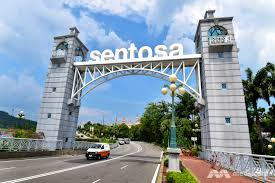
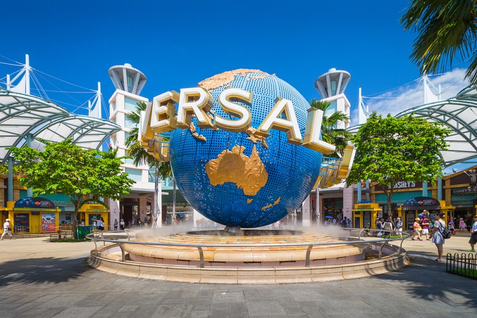
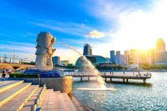

SENTOSA:  Sentosa is an island resort off Singapore’s southern coast, connected to the city by road, cable car, pedestrian boardwalk and monorail. By Sentosa Station, Tiger Sky Tower has panoramic views that can stretch as far as Indonesia. On the south coast, Palawan Beach is lined with food stalls and bars, and has a suspension bridge to a small offshore island. Palm-lined, crescent-shaped Tanjong Beach is more tranquil. The best attractions in Sentosa Island all share one thing in common: fun, and lots of it! This manmade island, accessible via a small bridge from the main Singapore island, is jam-packed full of entertaining things to do, many of which are geared towards families with young kids.
UNIVERSAL STUDIOS:  Universal Studios Singapore is a theme park located within Resorts World Sentosa on Sentosa Island, Singapore. It features 28 rides, shows, and attractions in seven themed zones. It was a key component of Genting's bid for the right to build Singapore's second integrated resort. On 8 December 2006, the Singapore government announced that the consortium had won the bid. Construction of the theme park and the rest of the resort started on 19 April 2007. It is the second Universal Studios theme park to open in Asia (Japan being the first), and the first in Southeast Asia. The official plans for the park were unveiled to the public when Universal Studios Singapore released a park map to the public on 20 October 2009. Universal Studios Singapore has since attracted more than 2 million visitors in the 9 months from its openings
GARDENS BY THE BAY:
 Gardens by the Bay is a nature park spanning 101 hectares of reclaimed land in the Central Region of Singapore, adjacent to the Marina Reservoir. The park consists of three waterfront gardens: Bay South Garden, Bay East Garden and Bay Central Garden.Gardens by the Bay is part of the nation's plans to transform its "Garden City" to a "City in a Garden", with the aim of raising the quality of life by enhancing greenery and flora in the city. First announced by the Prime Minister, Lee Hsien Loong, at the National Day Rally in 2005, Gardens by the Bay was intended to be Singapore's premier urban outdoor recreation space, and a national icon.
Gardens by the Bay is a nature park spanning 101 hectares of reclaimed land in the Central Region of Singapore, adjacent to the Marina Reservoir. The park consists of three waterfront gardens: Bay South Garden, Bay East Garden and Bay Central Garden.Gardens by the Bay is part of the nation's plans to transform its "Garden City" to a "City in a Garden", with the aim of raising the quality of life by enhancing greenery and flora in the city. First announced by the Prime Minister, Lee Hsien Loong, at the National Day Rally in 2005, Gardens by the Bay was intended to be Singapore's premier urban outdoor recreation space, and a national icon.
MERLION PARK:  Merlion Park (Malay: Taman Merlion, Chinese:Tamil), is a Singapore landmark and major tourist attraction, located near One Fullerton, Singapore, near the Central Business District (CBD). The Merlion is a mythical creature with a lion's head and the body of a fish that is widely used as a mascot and national personification of Singapore. Two Merlion statues are located at the park. The original Merlion structure measures 8.6 meters tall and spouts water from its mouth. It has subsequently been joined by a Merlion cub, which is located near the original statue and measures just 2 metres tall.
THE BOTANIC GARDENS:
The Singapore Botanic Gardens is a 160-year-old tropical garden located at the fringe of Singapore's Orchard Road shopping district. It is one of three gardens, and the only tropical garden, to be honoured as a UNESCO World Heritage Site. The Botanic Gardens has been ranked Asia's top park attraction since 2013, by TripAdvisor Travellers' Choice Awards. It was declared the inaugural Garden of the Year, International Garden Tourism Awards in 2012, and received Michelin's three-star rating in 2008.
The Botanic Gardens was founded at its present site in 1859 by an agri-horticultural society. It played a pivotal role in the region's rubber trade boom in the early twentieth century, when its first scientific director Henry Nicholas Ridley, headed research into the plant's cultivation. By perfecting the technique of rubber extraction, still in use today, and promoting its economic value to planters in the region, rubber output expanded rapidly. At its height in the 1920s, the Malayan peninsula cornered half of the global latex production.
SINGAPORE WEATHER